Crédit : Louise Raoult sur Unsplash
Classification des maladies des feuilles par un réseau de convolution
Publié en août 2021.
Introduction
On souhaite étudier les maladies des feuilles et, plus particulièrement, parvenir à en classifier certaines grâce à un réseau de neurones. Il va pour cela nous falloir une base de données contenant des images de feuille, chacune labelisée avec le nom de la maladie en jeu.J'ai trouvé la base de données sur le site Kaggle : https://www.kaggle.com/sizlingdhairya1/leaf-disease
Elle contient 239 images de feuille. 5 classes sont présentes : "Normal" (correspondant à des feuilles saines), "Bactérie", "Champignon", "Virus" et "Nématodes". Précisons que l'on travaillera avec des images en couleurs.
Pour classifier les feuilles selon leur maladie, on va utiliser un réseau de neurones. Une structure particulièrement adaptée à ce genre de problème est la structure convolutive, avec une ou plusieurs couches de convolution. Voyons cela en détail.
Le code
Importations et découverte des données
On commence par importer les librairies nécessaires :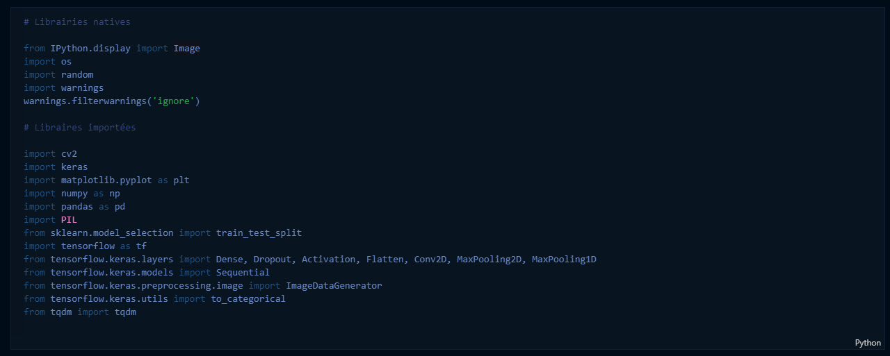
La première chose à faire est alors d'explorer le jeu de données pour en connaître la structure. Ce dernier étant structuré en dossiers (toutes les feuilles d'une même maladie par dossier), on affiche une image de chaque classe (ici, dans l'ordre : normal, nematodes, bactérie, virus, champignon) : 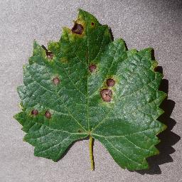 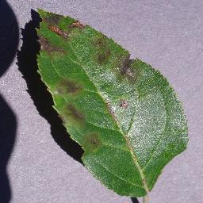 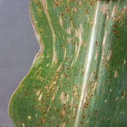 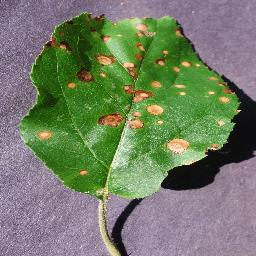
Préparation des données
Utilisons NumPy pour créer un array contenant les binômes image/label (les images sont sous forme de tableaux 23D). On fixe également la taille des images afin de toujours travailler à format identique : 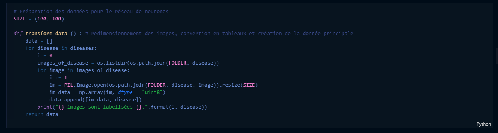D'abord, on augmente les données en mélangeant leur ordre d'apparition (avec numpy.random.shuffle) et on les normalise en les divisant par 255.0 (la valeur maximale d'un pixel), cela afin d'optimiser la vitesse d'entraînement du futur réseau de neurones.
Ensuite, on effectue une transformation "string to digit" pour convertir les labels du format string en vecteurs numériques à 5 composantes (des 0 partout et un 1 au rang de la bonne classe, pour chaque classe possible parmi les 5). C'est la fonction to_categorical de Keras qui permet de faire cela. On sera ainsi compatible avec la sortie du réseau futur (qui renvoie des vecteurs de probabilité, nous le détaillerons) : 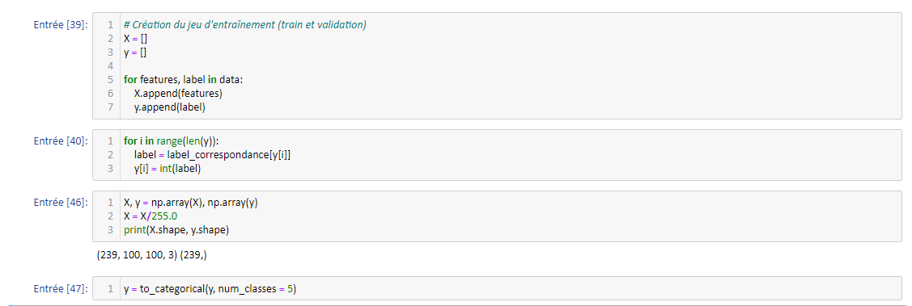
Enfin, on utilise un objet permettant d'appliquer des rotations et des translations sur les images de la base de données (l'objet agit directement sur les tableaux 2D) : 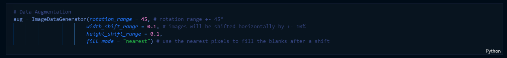
Séparation des données et construction du réseau de neurones
À ce stade, on peut utiliser la fonction test-train-split de Scikit-Learn avec un ratio de 80% pour séparer les données en jeux d'entraînement et de validation : 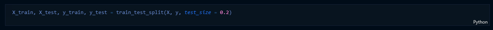Vient alors le temps de construire le réseau de neurones. C'est le coeur de l'algorithme. J'opte pour un réseau très simple (et sans doute sous-optimal) pour découvrir la couche de convolution 2D de tensorflow :
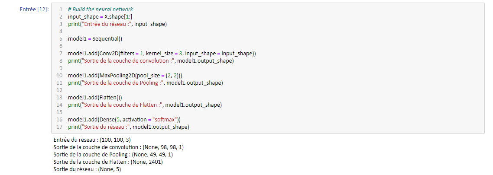
Prenons le temps d'expliquer les couches utilisées.
Les données arrivent au format np.array de taille 100x100x3 dans le réseau (le 3 provient du format RGB des images en couleurs). La 1ère couche est la couche de convolution. Elle va générer un noyau de convolution (ici de taille 3x3x3 car nous sommes en 3 dimensions), un cube numérique que l'on va faire "glisser" le long d'une entrée pour balayer tout le cube de données entrant.
Pour simplifier, supposons des entrées 2D. Le noyau de 3x3 va glisser d'abord de droite à gauche puis de haut en bas sur la matrice de données en entrée. Pour chaque position du noyau de convolution, on multiplie la valeur de la cellule du noyau et celle de la matrice en superposition. En répétant l'opération sur toute la surface couverte par le noyau pour une position donnée et en sommant les multiplications, on obtient la valeur de la convolution pour cette position relative noyau/matrice. Le principe est le même en 3D.
Je prends le batch-size (le nombre d'images que l'on envoie au réseau avant la descente de gradient) à 1 car je n'ai pas beaucoup de données. D'autre part, je choisis de prendre un noyau carré (un seul paramètre entier passé à l'option kernel-size) de taille 3 (en réalité le noyau est cubique car l'image d'entrée est en couleurs, le résultat d'une cellule sera la somme de 3 filtres de convolution, chacun de taille (3, 3) et valables sur un des trois "color-channel"). Enfin, je me limite à un seul filtre (une seule dimension de sortie correspondant à un seul noyau cubique de convolution).
La descente de gradient optimisera le filtre de la couche Conv2D contenant 3*3*3 +1 = 28 paramètres (le +1 correspond au biais et est un scalaire).
La couche suivant est celle de MaxPooling2D. Elle génère un noyau carré de taille 2 (à voir comme une "loupe" qui regarde la matrice d'entrée qui lui arrive en entrée) se déplaçant sans chevauchement sur le résultat de la couche Conv2D (taille (98, 98, 1) du fait de la dimension choisie pour le noyau). Cette "loupe" prend la valeur maximale de chaque zone parcourue : la sortie est donc de taille (49, 49, 1) et, on l'espère, est capable de faire ressortir les contrastes sur l'image (en association avec Conv2D).
On termine le réseau par un couche de remise à plat ("Flatten") qui fait la transformation "données 2D" vers "liste 1D", ainsi qu'une couche Dense de 5 neurones. Cette dernière est liée à la fonction d'activation Softmax afin obtenir un vecteur de probabilité normalisé (sur lequel on calculera la perte par rapport au vrai label à chaque itération).
On termine par compiler le modèle : 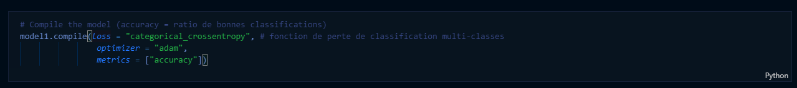
On choisit l'entropie croisée comme fonction de perte pour le modèle. Dans notre cas, une seule prédiction de classe est correcte à chaque itération (pas de multi-classes) donc la perte s'écrit simplement comme : 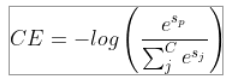
où les Si sont les valeurs en entrée de la couche Dense du réseau pour chacune des classes. Dans notre cas, C = 5 (nombre de classes).
On se donne également une métrique pour suivre l'avancement de l'entraînement : la précision. Elle vaut 1 pour une itération donnée si la classification est correcte, 0 sinon. On s'attend à ce que la précision augmente avec les vagues d'entraînement.
Je ne m'étends pas sur le choix de l'optimiseur Adam car j'attends de mieux comprendre les mathématiques de la descente de gradient stochastique. Passons aux simulations.
Simulation et résultats
On entraîne le réseau avec 5 époques, correspondant au nombre de fois où toutes les données d'entraînement sont données au réseau (on pourrait optimiser ce paramètre par itérations successives) : 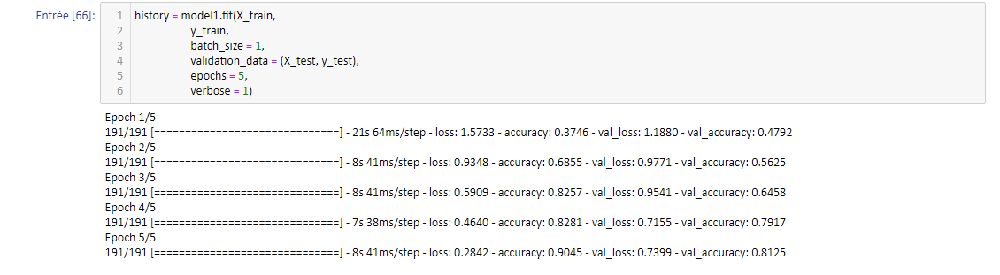On observe que la précision augmente durant les époques, ce qui est bon signe, jusqu'à atteindre 90% sur le jeu d'entraînement et 81% sur le jeu de validation. C'est un bon score pour un réseau minimaliste comme celui déployé. La courbe obtenue est la suivante :
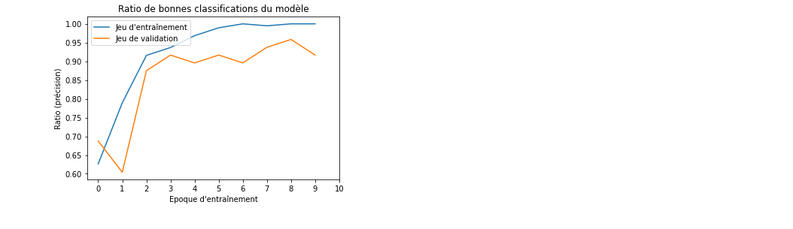
On remarque l'absence d'overfitting (en effet, l'erreur d'entraînement ne repart pas à la hausse avec les époques) et le début d'une stabilisation. On peut, pour terminer, essayer de prédire la maladie d'une image extérieure aux jeux utilisés jusqu'ici :
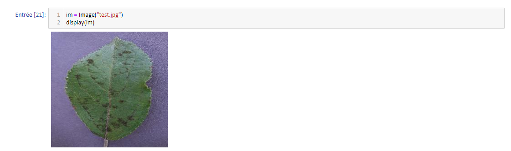
Le modèle entraîné prédit la classe 1 (c'est-à-dire "Bactérie") à 65% et la classe "Normal" à 35%. L'image représente une feuille faiblement atteinte par une bactérie, donc la classe prédite majoritairement est la bonne. On peut comprendre la confusion en observant les larges zones saines de la feuille. Il faudrait bien entendu tester plusieurs autres données extérieures, mais cela sera pour une prochaine fois ! Nous tenterons alors d'améliorer le modèle simpliste construit ici.